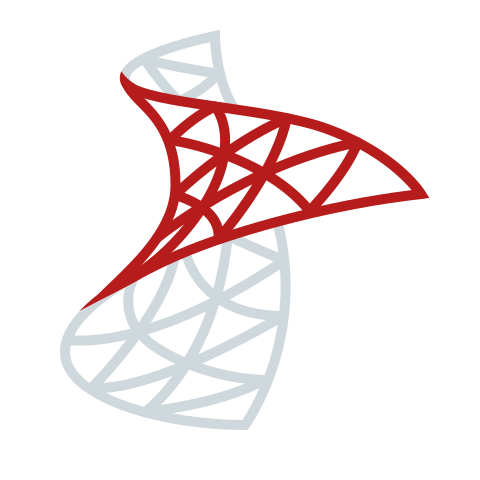

Olá !
Sou o Paulo Henrique,
Front-End Developer;
Transformo ideias em interfaces modernas e funcionais, sempre focando em usabilidade e performance.
Sobre
Sou Bacharel em Sistemas de Informação pela Uninove e possuo curso em Design Gráfico pela SAGA. Sempre fui fascinado pelo mundo da tecnologia e, ao longo da minha trajetória, explorei diversas áreas até me encontrar no Desenvolvimento Web, iniciando pelo Front-End, mas com o objetivo de me tornar Full Stack Developer.
Tenho boa base em HTML, CSS e JavaScript, além de conhecimentos iniciais em TypeScript, Angular e React. Utilizo ferramentas de estilização como Bootstrap e Tailwind, e aplico Git e GitHub para versionamento e colaboração em projetos.
Nos últimos meses, venho ampliando meus estudos para o Back-End, explorando C# com ASP.NET (MVC) e práticas de arquitetura em três camadas (Model, Business e Data Access), além de integrações com SQL Server. Meu objetivo é consolidar minha carreira como Full Stack Developer, unindo a base sólida no front-end com conhecimentos em back-end, banco de dados e arquitetura de software.
Além da parte técnica, também utilizo ferramentas que auxiliam no fluxo de trabalho, como Figma (protótipos), Miro (diagramas e fluxogramas), Trello (gestão de tarefas) e Draw.io (modelagem visual).
Estou em constante aprendizado e motivado a contribuir com soluções que unam tecnologia, inovação e UX/UI design, de forma estratégica e eficiente.
Habilidade
-

-

-
-

-

-

-

-

-

-

-

-

-

-

- 
-

Portfólio

Trajetoria
Profissional
-
Desenvolvedor Front-End Júnior | Designer Gráfico
Freelancer

Set. de 2024 - Atual
Atuo como Desenvolvedor Front-End Júnior e Designer Gráfico, unindo conhecimentos de programação e design para criar interfaces modernas e funcionais.
Como desenvolvedor, foco na construção de landing pages e aplicações web responsivas, utilizando tecnologias como HTML, CSS, JavaScript, TypeScript, Angular e React. Meu objetivo é garantir código otimizado e uma excelente experiência para o usuário.
Como designer gráfico, desenvolvo identidades visuais, materiais promocionais e artes vetoriais, além de elaborar layouts de sites (UI/UX) para criar interfaces visuais intuitivas e atraentes.
Minha atuação nessas áreas complementares me permite entregar soluções completas, alinhando estética e funcionalidade para fortalecer a presença digital de marcas e negócios. -
Serviços de Facilities e Emissão de Alvarás
Freelancer
Jul. de 2022 - Jun. de 2024 · 2 anos.
Após minha saída formal da Alvará na Mão, continuei prestando serviços freelance para a empresa, atuando na área de facilities para emissão de alvarás.
Durante esse período, contribuí com a otimização dos processos de obtenção de licenças e alvarás, garantindo a conformidade dos trâmites junto aos órgãos reguladores.
Essa experiência consolidou minha expertise no setor, permitindo-me continuar evoluindo meus conhecimentos em gestão de processos. -

Coordenador Administrativo Jr.
Alvará na Mão
Dez de 2021 - Jul de 2022 · 8 meses.
Atuei como Coordenador Administrativo gerenciando integralmente a emissão de licenças e alvarás junto a prefeituras, vigilâncias sanitárias e corpo de bombeiros, do protocolo à entrega, garantindo organização e agilidade documental; atendi clientes internos e externos, participei de reuniões técnicas e pré-fiscalizações em campo para assegurar conformidade antes das vistorias oficiais.
Criei e otimizei fluxos de trabalho no Microsoft Office (Word, Excel, PowerPoint), reduzindo o tempo médio de obtenção de protocolos; como diferencial, idealizei e implementei um novo fluxo de serviços que acelerou significativamente a emissão de alvarás.
Ainda, apliquei conhecimentos em design gráfico para desenvolver materiais de marketing e ofereci suporte técnico de TI (manutenção de hardware, instalação de software e configuração de redes), assegurando o pleno funcionamento dos equipamentos. -
Jovem Aprendiz
Itaú Unibanco
Mai. de 2019 - Ago. de 2020 · 1 ano e 4 meses.
Atuei como Jovem Aprendiz no Itaú Unibanco, desempenhando funções administrativas e de suporte geral. Minhas responsabilidades incluíram auxiliar em análises e processos administrativos, organização de documentos e suporte a equipes internas.
Além disso, prestei suporte técnico sempre que necessário, auxiliando na atualização de softwares e drivers, substituição de periféricos e assistência em help desk. Também fui responsável por abrir e gerenciar chamados técnicos para a equipe especializada, garantindo a rápida resolução de problemas relacionados a hardware e sistemas.
Como um diferencial, desenvolvi um projeto de automação como desafio pessoal. Observei o fluxo de trabalho do analista que me supervisionava e criei uma planilha com macros para automatizar uma tarefa que antes levava 30 minutos para ser feita manualmente, reduzindo o tempo para apenas 2 minutos com um único clique. Essa iniciativa otimizou o processo e aumentou a eficiência da equipe. -
Design Gráfico e Técnico de Informática
Freelancer
Ago. de 2017 - Mai. de 2019 · 1 anos e 10 meses.
Atuei como freelancer prestando serviços de Design Gráfico e Suporte Técnico em Informática, atendendo clientes individuais e pequenas empresas.
Na área de Design Gráfico, desenvolvi materiais visuais para diferentes finalidades, incluindo edição e composição de imagens, criação de flyers, artes promocionais e artes vetoriais. Além disso, elaborei logotipos, identidades visuais e manuais de uso, garantindo consistência na comunicação das marcas. Também trabalhei na produção de materiais impressos, como cartões de visita e banners, e na criação de templates personalizados para apresentações e redes sociais.
Já como Técnico de Informática, realizei manutenção preventiva e corretiva em computadores e notebooks, assegurando melhor desempenho e durabilidade dos equipamentos. Atuei com formatação e reinstalação de sistemas operacionais, backup e recuperação de arquivos, além da montagem e desmontagem de hardware para upgrades e otimização de desempenho. Também prestei suporte na atualização de drivers, configuração e instalação de impressoras, além da limpeza de arquivos temporários e resíduos do sistema, garantindo maior eficiência dos dispositivos.
Acadêmica
-

Desenvolvimento Full-Stack
Digital Innovation One (DIO)
Set. de 2024 - Atual
Curso as principais tecnologias da área de desenvolvimento, iniciando pelo front-end. Meu objetivo final é construir uma base sólida como desenvolvedor full stack, com foco e especialização em front-end.

Certificados Adquiridos
-
Sistema de Informação
Universidade Nove de Julho (UNINOVE)
Fev. de 2016 - Set. 2020 · 4 anos e 7 meses.
Bacharel em Sistemas de Informação pela Universidade Nove de Julho (UNINOVE), onde desenvolvi uma base sólida em lógica computacional, prática de programação, estruturas de dados, álgebra aplicada à informática e arquitetura organizacional.
Também adquiri conhecimentos introdutórios em modelagem e programação para banco de dados, orientação a objetos, modelagem de sistemas, BPM, automação de processos, qualidade de software e fundamentos de marketing digital.
A formação proporcionou uma compreensão abrangente dos principais fundamentos da área de tecnologia da informação.
Certificados Adquiridos
-
Designer Grafico
School of Art, Game and Animation (SAGA)
Fev. de 2015 - Ago. de 2017 · 2 anos e 7 meses.
Durante minha formação na SAGA, desenvolvi uma base sólida em design gráfico com foco em arte vetorial, composição visual, edição e tratamento de imagem, além conehcimento basicos em edição de vídeo.
Trabalhei com as principais ferramentas da Adobe, como:
Adobe Illustrator
(arte vetorial e ilustrações)
Adobe Photoshop
(composição, edição e tratamento de imagens)
Adobe Premiere e After Effects
(edição e motion design para vídeos)
Essa experiência me deu fundamentos importantes para projetos criativos e habilidades complementares ao desenvolvimento web front-end.
Certificados Adquiridos